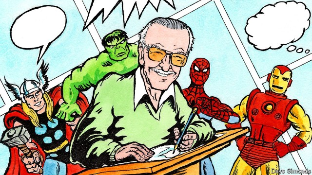

Step 5: Getting Feedback
After you’ve completed the first draft of your comic, you should get some feedback. This can be obtained from having friends and family read what you’ve done, getting a teacher’s professional opinion, or even posting it onto a popular site like DeviantArt or Twitter to hear what the internet has to say. If you’re getting positive feedback, good! If you’re getting negative feedback, don’t worry. Assuming that its constructive criticism, take what’s been said and either fix the flaws in your draft or keep that feedback in mind when writing the next chapter or comic strip.